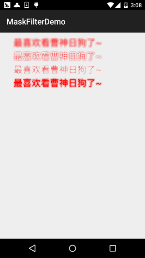
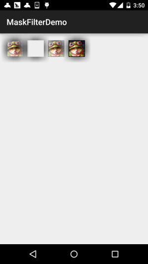
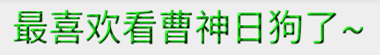

本節の導入：
在Android基礎入門チュートリアル——8.3.1 三つの描画ツールクラスの詳解のPaintメソッドには、次のようなメソッドがあります：
setMaskFilter(MaskFilter maskfilter)：MaskFilterを設定すると、さまざまなMaskFilterを使用してフィルター効果（フィルタリング、立体など）を実現できます！ そして、通常はこのMaskFilterを直接使用するのではなく、その2つのサブクラスを使用します：
BlurMaskFilter：ぼかしのスタイルと半径を指定して、Paintのエッジを処理します。
EmbossMaskFilter：光源の方向と環境光の強度を指定して、エンボス効果を追加します。
それでは、例を書いて試してみましょう～！
BlurMaskFilter；
EmbossMaskFilter；
1.BlurMaskFilter(ぼかし効果)
1.BlurMaskFilter(ぼかし効果)
フィルターや立体効果と言っても、実際はどうなるか分かりません。サンプルを見れば一目瞭然です：：
コード例：

実行結果図：
実装コード
BlurMaskFilterView.java：
/**
* Created by Jay on 2015/10/21 0021.
*/
public class BlurMaskFilterView extends View{
public BlurMaskFilterView(Context context) {
super(context);
}
public BlurMaskFilterView(Context context, AttributeSet attrs) {
super(context, attrs);
}
public BlurMaskFilterView(Context context, AttributeSet attrs, int defStyleAttr) {
super(context, attrs, defStyleAttr);
}
@Override
protected void onDraw(Canvas canvas) {
BlurMaskFilter bmf = null;
Paint paint=new Paint();
paint.setAntiAlias(true); //抗锯齿
paint.setColor(Color.RED);//画笔颜色
paint.setStyle(Paint.Style.FILL); //画笔风格
paint.setTextSize(68); //绘制文字大小，单位px
paint.setStrokeWidth(5); //画笔粗细
bmf = new BlurMaskFilter(10f,BlurMaskFilter.Blur.NORMAL);
paint.setMaskFilter(bmf);
canvas.drawText("最喜欢看曹神日狗了~", 100, 100, paint);
bmf = new BlurMaskFilter(10f,BlurMaskFilter.Blur.OUTER);
paint.setMaskFilter(bmf);
canvas.drawText("最喜欢看曹神日狗了~", 100, 200, paint);
bmf = new BlurMaskFilter(10f,BlurMaskFilter.Blur.INNER);
paint.setMaskFilter(bmf);
canvas.drawText("最喜欢看曹神日狗了~", 100, 300, paint);
bmf = new BlurMaskFilter(10f,BlurMaskFilter.Blur.SOLID);
paint.setMaskFilter(bmf);
canvas.drawText("最喜欢看曹神日狗了~", 100, 400, paint);
setLayerType(View.LAYER_TYPE_SOFTWARE, null); //关闭硬件加速
}
}
ここではカスタムViewを作成し、その中で描画を行います！
BlurMaskFilter(10f,BlurMaskFilter.Blur.NORMAL);
さて、上記のコード例から分かるように、このBlurMaskFilterの使用は、結局のところコンストラクタでインスタンス化するだけです：
私たちが制御できるのは、次の2つのパラメータです：1つ目のパラメータ
：ぼかしエッジの半径を指定します；2つ目のパラメータ
- BlurMaskFilter.Blur.NORMAL：ぼかしのスタイルを指定します。使用可能な値は次のとおりです：
- BlurMaskFilter.Blur.OUTER：内側と外側をぼかす
- BlurMaskFilter.Blur.INNER：外側をぼかす
- BlurMaskFilter.Blur.SOLID：内側をぼかす
：内側を太くし、外側をぼかす

まだ少し分かりにくいかもしれません。画像を用意して試してみましょう：
2.EmbossMaskFilter(エンボス効果)
2.EmbossMaskFilter(エンボス効果)
タイトルの通り、環境光源の方向と環境光の強度を指定してエンボス効果を追加します。同様に、サンプルを書いて効果を見てみましょう：：
コード例：

実行結果図：
/**
* Created by Jay on 2015/10/22 0022.
*/
public class EmbossMaskFilterView extends View{
public EmbossMaskFilterView(Context context) {
super(context);
}
public EmbossMaskFilterView(Context context, AttributeSet attrs) {
super(context, attrs);
}
public EmbossMaskFilterView(Context context, AttributeSet attrs, int defStyleAttr) {
super(context, attrs, defStyleAttr);
}
@Override
protected void onDraw(Canvas canvas) {
float[] direction = new float[]{ 1, 1, 3 }; // 设置光源的方向
float light = 0.4f; //设置环境光亮度
float specular = 8; // 定义镜面反射系数
float blur = 3.0f; //模糊半径
EmbossMaskFilter emboss=new EmbossMaskFilter(direction,light,specular,blur);
Paint paint = new Paint();
paint.setAntiAlias(true); //抗锯齿
paint.setColor(Color.BLUE);//画笔颜色
paint.setStyle(Paint.Style.FILL); //画笔风格
paint.setTextSize(70); //绘制文字大小，单位px
paint.setStrokeWidth(8); //画笔粗细
paint.setMaskFilter(emboss);
paint.setMaskFilter(emboss);
canvas.drawText("最喜欢看曹神日狗了~", 50, 100, paint);
Bitmap bitmap = BitmapFactory.decodeResource(getResources(), R.mipmap.ic_bg_meizi1);
canvas.drawBitmap(bitmap, 150, 200, paint);
setLayerType(View.LAYER_TYPE_SOFTWARE, null); //关闭硬件加速
}
}
実装コード
EmbossMaskFilter(float[] direction, float ambient, float specular, float blurRadius)実行結果図から、EmbossMaskFilterの効果がいくらか分かります。光を変更するとエンボス効果が生まれます～女性の画像ではあまり目立ちませんが、文字でははっきりと模様が表示されています！BlurMaskFilterと同じように、関連する設定はすべてコンストラクタで行います！
directionパラメータは順に次のとおりです：
ambient：浮動小数点型の配列で、x、y、z軸の光源方向を制御します
specular：環境光の明るさを設定します。0から1の間
blurRadius：鏡面反射係数
：ぼかし半径
これらの値を変更して、さまざまな効果を試すことができます。たとえば、上記の値を変更すると、また別の効果になります：

3.注意事項
3.注意事項
- ApplicationMaskFilterを使用する際は注意が必要です。targetSdkVersionが14以上の場合、MaskFilterは効果を発揮しません。これは、AndroidではAPI 14以上のバージョンでハードウェアアクセラレーションがデフォルトで有効になっており、GPUの特性を十分に活用して描画をより滑らかにしますが、メモリを多く消費するためです！では、ハードウェアアクセラレーションをオフにすれば問題ありません。ハードウェアアクセラレーションはさまざまなレベルでオン/オフを切り替えることができ、通常はオフにします～
- Activity：設定ファイルのapplicationノードに追加します： android:hardwareAccelerated="true"
- View：設定ファイルのactivityノードに追加します android:hardwareAccelerated="false"
サンプルコードのダウンロード：
本節のまとめ：
本節のまとめ：setMaskFilter(MaskFilter maskfilter)本節ではPaintの1つのAPIを紹介し、
MaskFilterの2つのサブクラスの基本的な使い方を学びました：BlurMaskFilter(ぼかし効果)とEmbossMaskFilter(エンボス効果)。比較的簡単です。少し多く学んでおくことは、上級編のカスタムビューにも悪くありません。では、今回はこの辺で。ありがとうございます～
samples\android-xx\legacy\ApiDemos\src\com\example\android\apis\graphicsそうそう、言い忘れましたが、実はSDKのexampleの中に、この2つの使い方をデモしているクラスがあります：FingerPaint.javaディレクトリ内の：
クリックしてノートを共有
クリックしてノートを共有